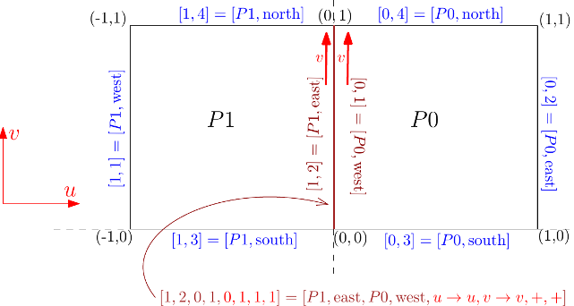

|
G+Smo
24.08.0
Geometry + Simulation Modules
|


|
|
G+Smo
24.08.0
Geometry + Simulation Modules
|
|
In this tutorial you will get to know the main geometric objects and operations available in the library.
The classes/naming convention regarding B-splines is as follows:
This class derives from gsBasis, representing a set of B-spline basis functions. These are polynomial functions, i.e. there are no weights (the weights if we regard them as NURBS are all equal to 1, therefore not stored). The main ingredient for constructing a B-spline basis is a knot vector, see knotVector_example.cpp
This class derives from gsCurve and consists of a gsBSplineBasis plus a matrix which represents the coefficients in the basis. Therefore, the matrix contains the control points of the B-spline curve.
The tensor-product basis of dimension d where the coordinates are gsBSplineBasis.
A function defined by a gsTensorBSplineBasis plus a coefficient vector. As before, the number d stands for the dimension. For d=2 we have a gsSurface, for d=3 we have a gsVolume and for d=4 a gsBulk.
Similarly, gsNurbsBasis, gsNurbs, gsTensorNurbsBasis and gsTensorNurbs refer to Non-uniform rational B-spline bases patches (functions) of dimension one, or more, respectively.
Here is an example of how to create a knot vector and a B-spline basis, followed by uniform refinement.
Output:
BSplineBasis: deg=2, size=6, knot vector: [ -1 -0.75 -0.5 -0.25 0 ] ~ ( 3 1 1 1 3 ) deg=2, size=9, uSize=5, minSpan=0.25, maxSpan=0.25 BSplineBasis: deg=2, size=10, knot vector: [ -1 -0.875 -0.75 -0.625 -0.5 -0.375 -0.25 -0.125 0 ] ~ ( 3 1 1 1 1 1 1 1 3 ) deg=2, size=13, uSize=9, minSpan=0.125, maxSpan=0.125
And here is an example of how to compute the Greville abscissae, and evaluate the basis on them.
Output:
-1 -0.875 -0.625 -0.375 -0.125 0
1 0.25 0.125 0.125 0.125 0
0 0.625 0.75 0.75 0.625 0
0 0.125 0.125 0.125 0.25 1
These B-spline related classes are implemented in the Nurbs module.
Several basic operations are available: degree elevation, knot insertion, uniform refinement, interpolation, and so on, see bSplineBasis_example.cpp for a few of them.
Since all parametric curves, surfaces or volumes are geometric objects, all these derive from gsGeometry, which in turn derives from gsFunction.
We can obtain the control net of a geometry by
Finally, we can export tesselations (meshes) as files for visualization in Paraview as follows:
A gsMultiPatch object consists of a collection of patches with topological information. The topology is given by the boundaries and the adjacency graph, defining the connections between patches along boundaries.
Here is an XML file defining a simple 2-patch rectangle (two_patches.xml):
The file contains the patches plus information on the boundaries and interfaces between them. A boundary is a side that does not meet with another side. An interface consists of two sides that meet plus orientation information. The following illustration describes the data:

See also gismo::boundary and gismo::boundaryInterface for more information on the meaning of the multipatch data.
Analogously to multipatch objects, a gsMultiBasis object is a collection of gsBasis classes together with topological information such as boundaries and interfaces.